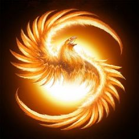
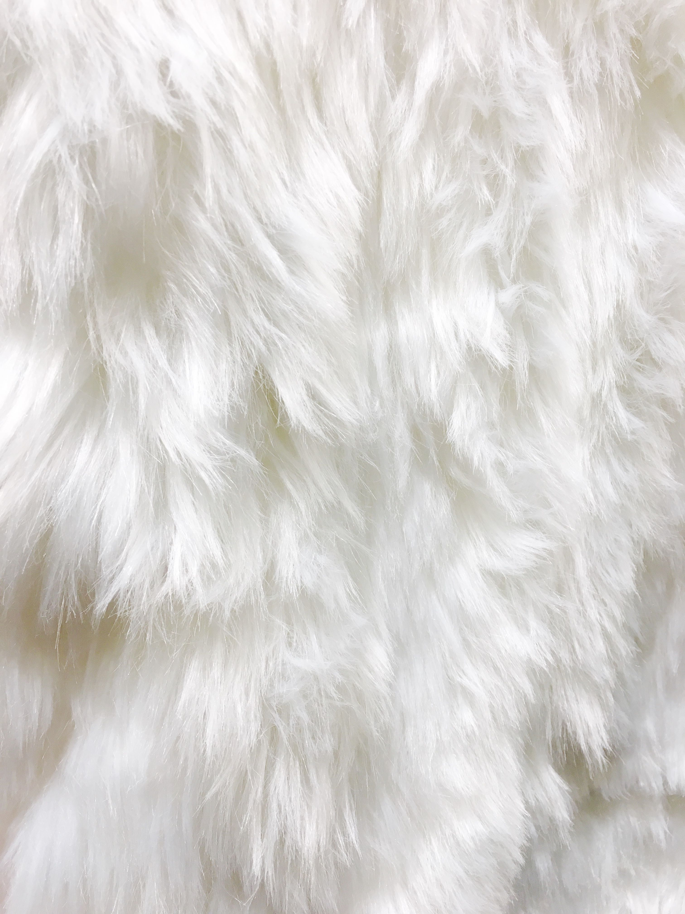
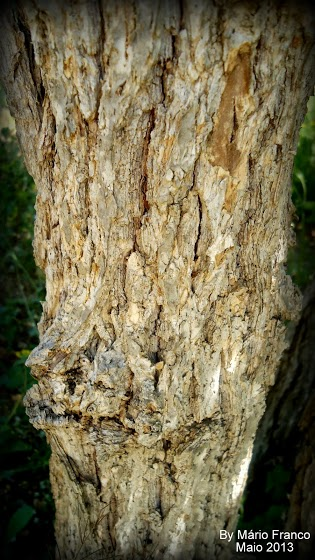
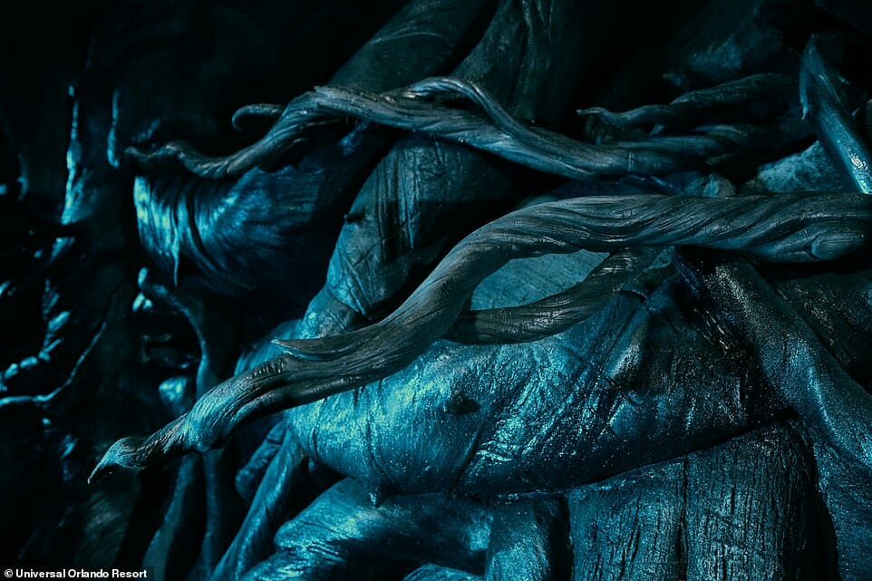
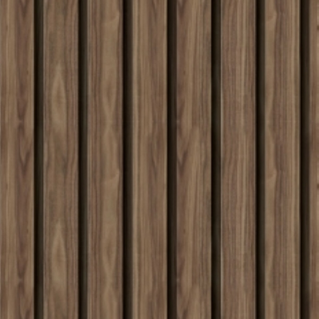

HOGWARTS WORLD
Bem vindo, Bruxo (nome da pessoa)
Saiba mais sobre sua casa!
CORVINAL
Você é da lufa-lufa
saiba mais sobre ela.
Lufa-Lufa
A Casa Lufa-Lufa é uma das quatro casas da Escola de Magia e Bruxaria de Hogwarts. Fundada por Helga Hufflepuff, é conhecida por valorizar o trabalho árduo, a lealdade, a paciência e a justiça. Helga acreditava que todos os bruxos e bruxas, independentemente de sua origem ou habilidades, mereciam uma chance justa de receber uma educação mágica. A Casa Lufa-Lufa acolhe alunos com uma variedade de habilidades e interesses. Eles são conhecidos por sua generosidade e pela capacidade de criar um ambiente acolhedor e inclusivo. Os membros da Lufa-Lufa são frequentemente descritos como calorosos, amigáveis e dispostos a ajudar os outros. As cores da Casa Lufa-Lufa são amarelo e preto, e seu símbolo é um texugo. A sala comunal da Lufa-Lufa está localizada nas cozinhas de Hogwarts, próximo à despensa, e é acessada por meio de um barril em que os alunos devem tocar uma sequência específica de repiques para entrar. Ao longo da história, a Casa Lufa-Lufa produziu muitos bruxos e bruxas notáveis. Cedrico Diggory foi um
Personagens Principais da Lufa-Lufa
Ninfadora Tonks
Ninfadora Tonks, conhecida como Tonks, é um personagem da série de livros "Harry Potter" escrita por J.K. Rowling. Ela é apresentada no quarto livro, "Harry Potter e o Cálice de Fogo", e desempenha um papel significativo na trama. Aqui estão algumas informações sobre Ninfadora Tonks: Ninfadora Tonks é uma bruxa metamorfomaga, o que significa que ela tem a habilidade de mudar sua aparência física à vontade. Ela é descrita como uma mulher jovem e animada, com cabelos rosa vibrantes que mudam de cor de acordo com seu humor. Tonks pertence à família Black, uma família de sangue puro com laços com a Casa de Sonserina, mas ela não compartilha das crenças tradicionais da família e se alia ao lado da Ordem da Fênix, um grupo de bruxos que se opõem a Voldemort e seus seguidores. Tonks é uma bruxa habilidosa e se torna uma Auror, uma bruxa encarregada de combater as forças das trevas e proteger a comunidade bruxa. Ela é uma integrante valiosa da Ordem da Fênix, ajudando na luta contra os Comensais da Morte. Ao longo da série, Tonks desenvolve um relacionamento romântico com Remo Lupin, um lobisomem e também membro da Ordem da Fênix. Eles se casam e têm um filho chamado Teddy Lupin. Tonks desempenha um papel importante na batalha final contra Voldemort e seus seguidores na Batalha de Hogwarts. Sua coragem e determinação são demonstradas quando ela luta ao lado de seus aliados para proteger a escola e seus amigos. Infelizmente, Tonks e Remo Lupin são mortos durante a batalha, deixando Teddy órfão. Sua morte é um momento trágico na série, demonstrando o custo da guerra e as perdas enfrentadas pelos personagens. A personagem de Ninfadora Tonks é lembrada por sua personalidade animada, sua habilidade metamorfomaga e sua dedicação à luta contra as forças das trevas. Ela representa a coragem e o sacrifício dos membros da Ordem da Fênix em sua batalha contra o mal.
Cedrico Diggory
Cedrico Diggory é um personagem importante na série de livros "Harry Potter" escrita por J.K. Rowling. Ele é introduzido no terceiro livro, "Harry Potter e o Prisioneiro de Azkaban", e desempenha um papel significativo na trama. Aqui estão algumas informações sobre Cedrico Diggory: Cedrico Diggory é um estudante da Casa de Lufa-Lufa em Hogwarts. Ele é descrito como um jovem alto, bonito e de cabelos loiros. Cedrico é admirado e respeitado por seus colegas e professores, sendo conhecido por sua integridade, lealdade e habilidades como bruxo. Cedrico se torna capitão do time de Quadribol da Lufa-Lufa e é um dos jogadores mais talentosos da escola. Ele é selecionado como o campeão da Lufa-Lufa no Torneio Tribruxo, um evento importante que ocorre no quarto livro, "Harry Potter e o Cálice de Fogo". Durante o Torneio Tribruxo, Cedrico demonstra coragem, habilidade e fair play em todas as tarefas. Ele desenvolve um relacionamento amigável com Harry Potter, o campeão da Grifinória, apesar da competição. No clímax do Torneio, Cedrico e Harry são transportados para um cemitério onde se encontram com Lord Voldemort. Cedrico é traiçoeiramente morto por Peter Pettigrew, um seguidor de Voldemort, por ordem do próprio Lord das Trevas. Sua morte é um momento impactante na série e tem um efeito duradouro em vários personagens, especialmente em Harry. A morte de Cedrico Diggory desencadeia eventos cruciais na trama, levando Harry Potter a enfrentar a crescente ameaça de Voldemort e a desencadear a Segunda Guerra Bruxa. A memória de Cedrico e sua morte trágica são lembradas e honradas pelos personagens ao longo dos livros subsequentes. Curiosidade interessante sobre Cedrico Diggory: O ator Robert Pattinson, que mais tarde se tornou famoso por interpretar Edward Cullen na saga "Crepúsculo", interpretou Cedrico Diggory na adaptação cinematográfica de "Harry Potter e o Cálice de Fogo". Sua interpretação ajudou a solidificar a imagem de Cedrico nos filmes e a aumentar a popularidade do personagem.
Newt Scamander
Newt Scamander é um personagem central na série de filmes "Animais Fantásticos" e faz parte do mundo mágico de "Harry Potter". Ele é apresentado como o protagonista no filme "Animais Fantásticos e Onde Habitam" e sua continuação. Aqui estão algumas informações sobre Newt Scamander: Newt Scamander é um bruxo britânico e um magizoologista apaixonado por criaturas mágicas. Ele é conhecido por seu livro "Animais Fantásticos e Onde Habitam", que é um guia sobre criaturas mágicas. Newt embarca em uma jornada para coletar informações sobre essas criaturas e documentar suas descobertas. Ele é descrito como um homem de estatura média, com cabelos ruivos desgrenhados e um jeito um tanto desajeitado. Newt possui uma personalidade introvertida e tímida, preferindo a companhia das criaturas mágicas do que das pessoas. Newt Scamander é um personagem gentil e compassivo, mostrando grande cuidado e respeito pelas criaturas mágicas. Ele acredita na importância da conservação e proteção desses seres e em sua coexistência pacífica com os bruxos e trouxas. Ao longo dos filmes, Newt se envolve em diversas aventuras relacionadas às criaturas mágicas, enquanto enfrenta desafios pessoais e lida com o crescente perigo representado pela ascensão de Gellert Grindelwald, um poderoso bruxo das trevas. Newt Scamander é retratado como um personagem complexo, com suas próprias fraquezas e medos. Ele desenvolve relacionamentos com outros personagens, incluindo Tina Goldstein, Queenie Goldstein e Jacob Kowalski, que se tornam seus amigos leais e parceiros nas aventuras. Além dos filmes, o personagem de Newt Scamander também é mencionado na série de livros "Harry Potter". Ele é citado como autor do livro "Animais Fantásticos e Onde Habitam", que é usado como livro didático na escola de Hogwarts. Em resumo, Newt Scamander é um magizoologista e protagonista da série de filmes "Animais Fantásticos". Ele é conhecido por sua paixão pelas criaturas mágicas e seu livro sobre elas. Newt é um personagem gentil, compassivo e aventureiro, que se dedica à proteção das criaturas mágicas e enfrenta desafios em seu caminho.
Hannah Abbott
Hannah Abbott é um personagem secundário na série de livros "Harry Potter" escrita por J.K. Rowling. Ela é introduzida no primeiro livro, "Harry Potter e a Pedra Filosofal", e faz parte da Casa de Lufa-Lufa em Hogwarts. Aqui estão algumas informações sobre Hannah Abbott: Hannah Abbott é descrita como uma garota tímida e reservada, com cabelos loiros e uma aparência doce. Ela é conhecida por sua natureza sensível e amigável, mostrando compaixão pelos outros. Ao longo dos livros, Hannah Abbott se torna uma amiga próxima de Neville Longbottom, outro estudante de Hogwarts. Eles compartilham uma conexão especial, já que ambos perderam seus pais durante a Primeira Guerra Bruxa. Hannah Abbott é membro da Armada de Dumbledore, um grupo secreto formado por estudantes de Hogwarts para lutar contra Dolores Umbridge e suas políticas repressivas. Ela demonstra coragem ao se juntar à resistência e lutar pelos direitos dos alunos. No sexto livro, "Harry Potter e o Enigma do Príncipe", Hannah Abbott é escolhida para ser a monitora da Casa de Lufa-Lufa. Isso mostra sua dedicação aos estudos e sua capacidade de liderança, apesar de sua natureza reservada. Embora não desempenhe um papel central na trama principal, Hannah Abbott representa a força silenciosa e a solidariedade entre os alunos de Hogwarts. Sua participação na Armada de Dumbledore e seu apoio a Neville Longbottom destacam sua coragem e lealdade. Após a conclusão da série, Hannah Abbott se torna proprietária do pub "Cabeça de Javali", um estabelecimento popular no mundo bruxo. Em resumo, Hannah Abbott é uma estudante de Hogwarts da Casa de Lufa-Lufa, conhecida por sua natureza tímida, compaixão e amizade com Neville Longbottom. Ela mostra coragem ao se juntar à Armada de Dumbledore e representa a força silenciosa entre os alunos de Hogwarts.
Ernie Macmillan
Ernie Macmillan é um personagem secundário na série de livros "Harry Potter" escrita por J.K. Rowling. Ele é introduzido no primeiro livro, "Harry Potter e a Pedra Filosofal", e faz parte da Casa de Lufa-Lufa em Hogwarts. Aqui estão algumas informações sobre Ernie Macmillan: Ernie Macmillan é descrito como um aluno robusto, de aparência saudável, com cabelos loiros e olhos azuis. Ele é conhecido por sua personalidade extrovertida e sua postura confiante. Ernie é um estudante diligente e leva a sério seus estudos em Hogwarts. Ele demonstra um grande senso de orgulho em sua casa, a Casa de Lufa-Lufa, e é bastante leal aos seus colegas. Ernie Macmillan é membro da Armada de Dumbledore, um grupo secreto formado por estudantes de Hogwarts para lutar contra as políticas repressivas de Dolores Umbridge. Sua participação na resistência demonstra seu compromisso com a justiça e a luta contra o mal. Ele tem uma personalidade assertiva e muitas vezes expressa suas opiniões de forma enérgica. No entanto, ao longo da série, ele desenvolve um senso de humildade e aprende a ouvir e respeitar as opiniões dos outros. Ernie Macmillan é próximo de outros personagens da Lufa-Lufa, como Hannah Abbott e Justin Finch-Fletchley. Juntos, eles enfrentam desafios e trabalham em equipe durante as aventuras em Hogwarts. Embora Ernie não tenha um papel de destaque na trama principal, ele representa a força e a perseverança dos alunos da Lufa-Lufa. Sua participação na Armada de Dumbledore e seu senso de lealdade destacam sua coragem e dedicação. Em resumo, Ernie Macmillan é um estudante da Casa de Lufa-Lufa em Hogwarts, conhecido por sua personalidade extrovertida, lealdade e compromisso com os estudos. Ele participa da Armada de Dumbledore e representa a força e a determinação dos alunos da Lufa-Lufa.
Pomona Sprout
Pomona Sprout é uma personagem na série de livros "Harry Potter" escrita por J.K. Rowling. Ela é a Professora de Herbologia em Hogwarts e é descrita como uma mulher robusta, de aparência severa, com cabelos grisalhos e um sorriso bondoso. Aqui estão algumas informações sobre Pomona Sprout: Pomona Sprout é uma bruxa habilidosa e especializada em Herbologia, o estudo das plantas mágicas e suas propriedades. Ela é conhecida por seu conhecimento profundo e sua paixão pela disciplina. Como professora, ela leciona Herbologia para os alunos de Hogwarts, transmitindo seus conhecimentos sobre o mundo vegetal mágico. Ela é responsável pelo Jardim de Herbologia de Hogwarts, onde os estudantes têm a oportunidade de aprender e trabalhar com plantas mágicas. Pomona Sprout é extremamente dedicada ao seu trabalho, garantindo que o jardim esteja bem cuidado e fornecendo uma educação prática e enriquecedora para seus alunos. Além de ser uma professora exemplar, Pomona Sprout também é membro da Ordem da Fênix, um grupo de bruxos que se opõe a Voldemort e seus seguidores. Ela contribui com seu conhecimento e habilidades na luta contra as forças das trevas. Pomona Sprout é conhecida por sua personalidade calma, paciente e acolhedora. Ela demonstra grande empatia pelos alunos e está sempre disposta a ajudá-los. Ela é particularmente próxima de Neville Longbottom, um aluno desajeitado, mas dedicado, que compartilha seu amor pela Herbologia. A personagem de Pomona Sprout tem um papel importante na série, não apenas como uma professora influente, mas também como um exemplo de dedicação, compaixão e conhecimento. Sua especialidade em Herbologia contribui para a compreensão e a exploração do mundo mágico das plantas e a importância delas na magia e na vida dos bruxos.
Núcleos De Varinhas:
-

Pena de Fenix
A pena de fênix é um núcleo de varinha bastante especial e poderoso. As penas de fênix são conhecidas por serem extremamente leais aos seus donos e por produzirem varinhas com habilidades excepcionais. A varinha com núcleo de pena de fênix é notável por sua conexão com o mundo das fênix. Essas varinhas têm uma tendência a "escolher" seus donos, respondendo a bruxos e bruxas com características especiais, como coragem, nobreza de espírito e determinação. Essas varinhas são conhecidas por se unirem fortemente aos seus donos, reconhecendo-os como parceiros de confiança.
-

Pelo de Unicórnio
A pena de unicórnio é um dos núcleos utilizados na confecção de varinhas mágicas. As penas de unicórnio são altamente valorizadas por sua pureza e por produzirem varinhas com habilidades especiais. As varinhas com núcleo de pena de unicórnio são conhecidas por serem bastante leais aos seus donos. Elas são frequentemente associadas a bruxos e bruxas que possuem características como compaixão, pureza de coração e uma forte conexão com a natureza.
-

Corda de Coração de Dragão
a corda de coração de dragão é um dos materiais utilizados como núcleo para a fabricação de varinhas mágicas. Ela é obtida a partir do coração de um dragão, criatura mágica poderosa e lendária. As varinhas com núcleo de corda de coração de dragão são notáveis por sua capacidade de realizar feitiços complexos e poderosos. Elas têm um caráter mais agressivo e exigem um domínio preciso e forte determinação de seu dono para serem usadas efetivamente.
Tipos de madeira:
-

Madeira de Sabugueiro
A madeira de sabugueiro é conhecida por sua associação com a magia e a proteção. Varinhas feitas dessa madeira são frequentemente escolhidas por bruxos e bruxas que possuem habilidades curativas e têm uma conexão especial com a natureza. A madeira de sabugueiro é flexível e adaptável, tornando as varinhas feitas dela versáteis e capazes de executar uma ampla gama de feitiços.
-

Madeira de Visgo
A madeira de visgo é considerada rara e misteriosa. Ela é conhecida por ser altamente valorizada por suas propriedades defensivas. Varinhas feitas dessa madeira são frequentemente associadas a bruxos e bruxas habilidosos na arte da duelo e da proteção. A madeira de visgo produz varinhas poderosas e capazes de executar feitiços de escudo e defesa com grande eficácia.
-

Madeira de Nogueira
A madeira de nogueira é associada à sabedoria e à magia ancestral. Varinhas feitas dessa madeira são escolhidas por bruxos e bruxas que valorizam o conhecimento e têm um profundo respeito pela história e tradição. A madeira de nogueira é conhecida por produzir varinhas que são altamente sintonizadas com o poder das palavras e feitiços verbais, tornando-as ideais para bruxos especializados em encantamentos e feitiços linguísticos.
Flexibilidade Das Varinhas:
-
Varinhas Rígidas
As varinhas rígidas são conhecidas por sua falta de flexibilidade. Elas tendem a ser mais estáveis e exigem uma mão firme para controlar seu poder. Varinhas rígidas são frequentemente associadas a bruxos e bruxas que possuem uma natureza disciplinada, determinada e que preferem feitiços de precisão.
-
Varinhas Flexíveis
As varinhas flexíveis possuem uma curva mais suave e são mais maleáveis. Elas se adaptam facilmente às habilidades e estilos de magia de seus usuários. Varinhas flexíveis são escolhidas por bruxos e bruxas que são adaptáveis, criativos e se destacam em feitiços que requerem movimentos fluidos e graciosos.
-
Varinhas Semi-rígidas
As varinhas semi-rígidas são uma combinação entre as características das varinhas rígidas e flexíveis. Elas possuem uma certa resistência, mas também têm alguma flexibilidade. Essas varinhas são escolhidas por bruxos e bruxas que possuem uma personalidade equilibrada e versátil, capazes de lidar com uma variedade de estilos de magia.
-
Curiosidade:
É importante ressaltar que a flexibilidade da varinha pode influenciar o estilo e a eficácia do bruxo em diferentes tipos de feitiços. Cada bruxo tem uma relação única com sua varinha, e a flexibilidade desempenha um papel crucial nessa conexão, afetando a maneira como a magia é canalizada e executada.
Tamanho Das Varinhas:
-
Varinhas Curtas
Varinhas curtas são caracterizadas por terem um tamanho menor em relação às varinhas padrão. Elas geralmente possuem cerca de 20 a 25 centímetros de comprimento. Varinhas curtas são escolhidas por bruxos e bruxas que preferem uma abordagem mais ágil e precisa em sua magia. Essas varinhas são adequadas para movimentos rápidos e feitiços de curta distância.
-
Varinhas Padrão
As varinhas padrão são as mais comuns e populares. Elas geralmente têm entre 25 a 35 centímetros de comprimento. Essas varinhas são versáteis e adequadas para uma ampla gama de estilos de magia. Bruxos e bruxas que possuem varinhas de tamanho padrão têm a vantagem de se adaptar facilmente a diferentes tipos de feitiços e situações.
-
Varinhas Longas
Varinhas longas são caracterizadas por terem um comprimento maior em relação às varinhas padrão. Elas podem variar de 35 a 40 centímetros ou mais. Varinhas longas são frequentemente escolhidas por bruxos e bruxas que preferem uma abordagem mais imponente e poderosa em sua magia. Essas varinhas tendem a ser mais adequadas para feitiços que requerem gestos amplos e poderosos.
-
Curiosidade:
É importante notar que o tamanho da varinha pode afetar a maneira como ela é manejada e como a magia é canalizada. No entanto, a escolha do tamanho da varinha é uma questão de preferência pessoal e não determina a habilidade ou poder do bruxo. Cada bruxo possui uma varinha única, independentemente do tamanho, e é a conexão entre o bruxo e sua varinha que é essencial para realizar a magia com sucesso.
Sala Comunal da Lufa-Lufa
Sala Comunal da Lufa-Lufa
A sala comunal da Lufa-Lufa é um espaço especial e acolhedor localizado nas profundezas de Hogwarts, a escola de magia e bruxaria nos livros de "Harry Potter" escritos por J.K. Rowling. Aqui estão algumas informações sobre a sala comunal da Lufa-Lufa: Localização: A sala comunal da Lufa-Lufa está localizada no porão de Hogwarts, acessível por uma entrada escondida próxima às cozinhas da escola. Para entrar na sala comunal, é necessário tocar uma determinada sequência de barris em uma pilha próxima à entrada. Aparência e ambiente: A sala comunal da Lufa-Lufa é descrita como um espaço acolhedor e confortável. Ela possui um teto abobadado com janelas redondas que permitem a entrada de luz natural. As paredes são revestidas de pedra e decoradas com tapeçarias amarelas e douradas, refletindo as cores da casa. Há poltronas e sofás confortáveis, mesas de estudo e uma lareira aconchegante. Decoração: A sala comunal da Lufa-Lufa é decorada com elementos que refletem a personalidade e os valores da casa. Há plantas e flores espalhadas pelo ambiente, exibindo a conexão da Lufa-Lufa com a natureza e a Herbologia. Os móveis são aconchegantes e convidativos, proporcionando um ambiente confortável para os alunos relaxarem e socializarem. Atmosfera: A sala comunal da Lufa-Lufa é conhecida por ter uma atmosfera calorosa e amigável. Os alunos da Lufa-Lufa são caracterizados por sua lealdade, paciência e disposição para ajudar os outros. A sala comunal reflete essa atmosfera acolhedora, oferecendo um refúgio tranquilo para os estudantes se reunirem, estudarem e compartilharem momentos juntos. Elementos de destaque: Na sala comunal da Lufa-Lufa, há um quadro de avisos onde são divulgadas informações relevantes para os alunos da casa. Além disso, há uma entrada para as tendas do time de Quadribol da Lufa-Lufa, permitindo que os jogadores acessem facilmente suas acomodações e equipamentos. Acesso: A entrada para a sala comunal da Lufa-Lufa é protegida por uma senha que apenas os alunos da Lufa-Lufa conhecem. Isso garante a privacidade e a segurança dos membros da casa. Em resumo, a sala comunal da Lufa-Lufa é um espaço acolhedor, decorado com as cores e valores da casa. Ela oferece um ambiente confortável e convidativo, refletindo a personalidade amigável e solidária dos alunos da Lufa-Lufa. É um lugar onde os estudantes podem se reunir, relaxar e fortalecer os laços de amizade.
Os três bruxos poderosos mais conhecidos da Lufa-Lufa são:
Esses três exemplos destacam bruxos da Lufa-Lufa que demonstraram habilidades mágicas notáveis. É importante lembrar que a força de um bruxo não se limita apenas às habilidades em combate, mas também inclui traços como coragem, lealdade, compaixão e dedicação a causas nobres. Cada bruxo tem suas próprias habilidades únicas que contribuem para sua força e importância dentro do mundo mágico.
Cedrico Diggory
Cedrico Diggory, embora tenha sido mencionado anteriormente, vale a pena destacar novamente. Ele era um bruxo talentoso e atlético, conhecido por sua destreza no Quadribol e sua coragem. Cedrico foi selecionado como campeão de Hogwarts no Torneio Tribruxo, o que demonstra seu alto nível de habilidade mágica. Sua trágica morte no final do livro "Harry Potter e o Cálice de Fogo" foi um momento comovente e mostrou sua bravura até o fim.
Ninfadora Tonks
Tonks, embora pertencesse à família Black, foi selecionada para a Lufa-Lufa. Ela era uma bruxa metamorfomaga com habilidades impressionantes. Sua capacidade de alterar sua aparência física era uma demonstração de sua maestria sobre a magia. Além disso, Tonks também era uma bruxa talentosa em combate, especialmente quando se tratava de duelos. Sua participação na Ordem da Fênix e seu compromisso em lutar contra as forças das trevas destacam sua força e coragem.
Pomona Sprout
Embora não seja uma bruxa conhecida por suas habilidades de duelo, Pomona Sprout, professora de Herbologia em Hogwarts e chefe da casa Lufa-Lufa, era uma bruxa extremamente talentosa em seu campo. Sua expertise em plantas mágicas e seu conhecimento profundo da Herbologia eram amplamente reconhecidos. Pomona demonstrava habilidades notáveis em cultivar e manipular plantas mágicas, mostrando sua força e maestria nessa área específica da magia.
Conquistas
Quadribol - Lufa-Lufa
A história de conquistas do Quadribol da Casa Lufa-Lufa em Hogwarts é menos destacada em comparação com outras casas, como Grifinória e Sonserina, nos livros de "Harry Potter". No entanto, ao longo da série, há algumas menções de momentos de destaque para a Casa Lufa-Lufa no esporte. Aqui estão algumas informações sobre a história do Quadribol da Casa Lufa-Lufa: Embora não seja especificamente detalhado na série, é mencionado que a Casa Lufa-Lufa tem uma equipe de Quadribol em Hogwarts, assim como as outras casas. Como a Casa Lufa-Lufa é conhecida por seus valores de lealdade, honestidade e trabalho duro, é provável que seus jogadores também compartilhem essas características. Durante os anos de Hogwarts de Harry Potter, a Casa Lufa-Lufa é liderada pelo capitão da equipe de Quadribol. Embora não haja detalhes específicos sobre vitórias ou títulos da casa, é seguro presumir que a equipe Lufa-Lufa participe dos jogos de Quadribol da escola e possa ter alcançado algum sucesso ao longo dos anos. É importante destacar que o Quadribol é um esporte muito popular em Hogwarts e envolve uma competição acirrada entre as casas. Cada casa tem sua própria equipe de Quadribol, consistindo de um goleiro, batedores, artilheiros e um apanhador, e eles competem entre si em jogos emocionantes. Embora a Casa Lufa-Lufa não receba tanto destaque no Quadribol, a ênfase nos valores da casa, como lealdade e trabalho duro, sugere que os jogadores da Lufa-Lufa sejam comprometidos e dedicados. Eles podem não ter ganhado tantos títulos quanto outras casas, mas sua abordagem honesta e determinação são valiosas para a equipe. Em resumo, embora a história de conquistas do Quadribol da Casa Lufa-Lufa em Hogwarts não seja tão proeminente nos livros de "Harry Potter", é possível que a casa tenha tido momentos de destaque no esporte ao longo dos anos. Os jogadores da Lufa-Lufa provavelmente são leais, trabalhadores e empenhados em contribuir para o desempenho da equipe.